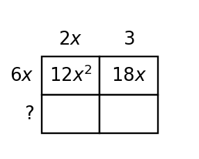

Algebra 1 · Unit 5 · Section 5.1 · Investigation
GCF Structure Lab
GCF and Structure
Learning Target: Students will identify common factors and use structure to rewrite polynomial expressions.
Directions
- Work with a partner unless your teacher assigns a different grouping.
- Show the evidence you use, not only the final answer.
- When a representation changes, keep the meaning of the quantities attached to your work.
- Revise an answer if later evidence shows that your first claim was incomplete.
Part 1 · Find the Shared Structure
| Expression | GCF | Factored form |
|---|---|---|
| $12x^2+18x$ | ||
| $15a^3-25a^2$ | ||
| $8m^2n+12mn^2$ |
Part 2 · Area Model Check
Use the rectangle model to explain why a common factor can be pulled outside an expression.

Part 3 · Incomplete Factoring
A student writes $18x^2+30x=3x(6x+10)$. The expression is equivalent, but the task was to factor out the GCF. Improve the answer and explain what was incomplete.
Synthesis
Describe a multiplication-back check that proves a factorization is equivalent to the original polynomial.